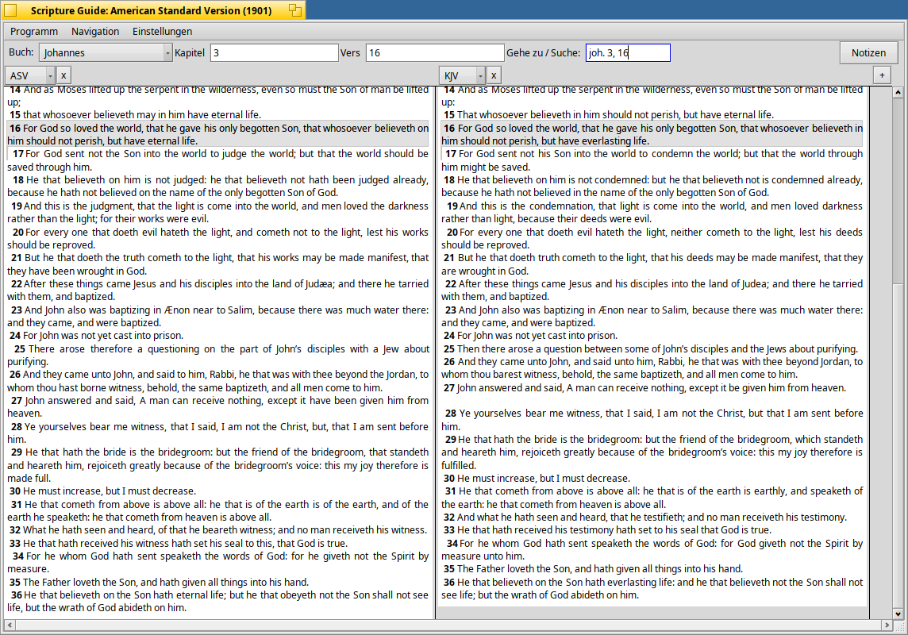
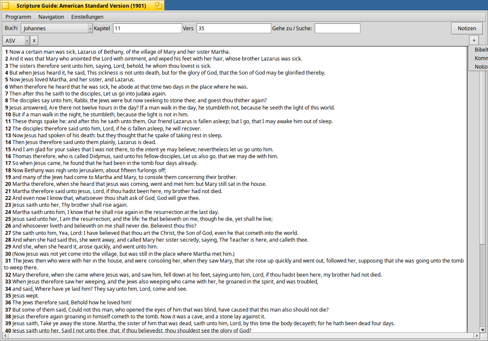
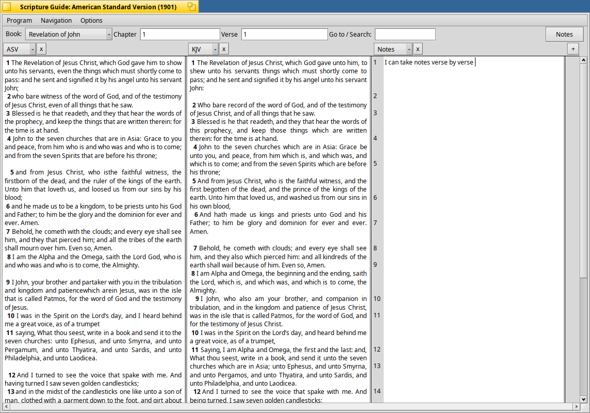
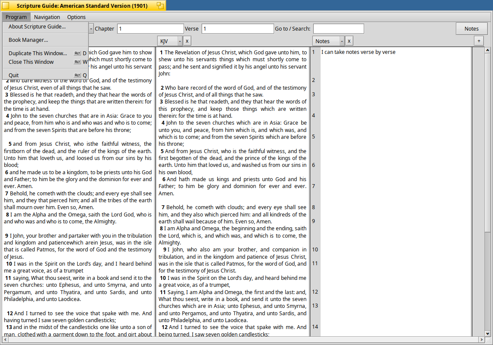
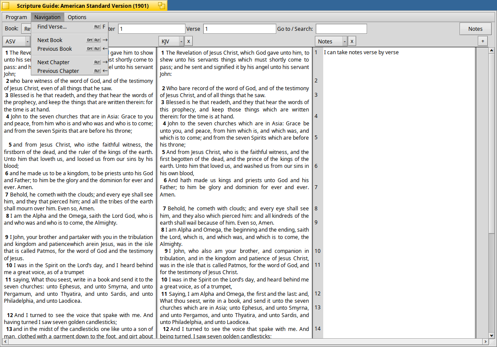
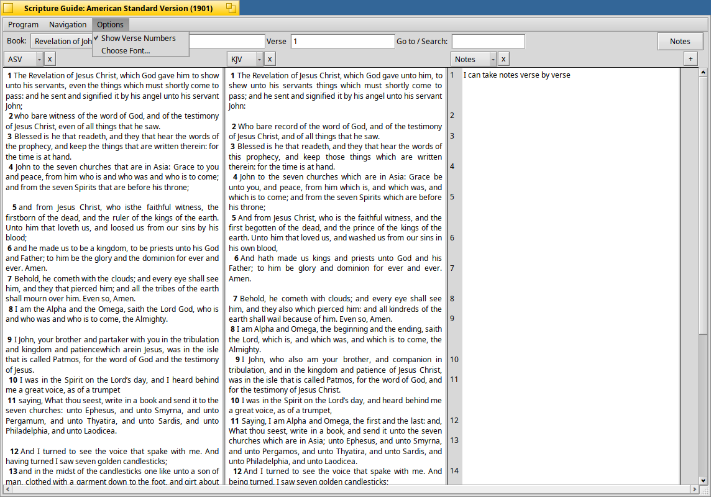
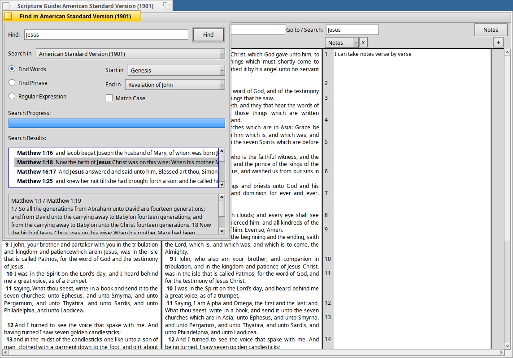
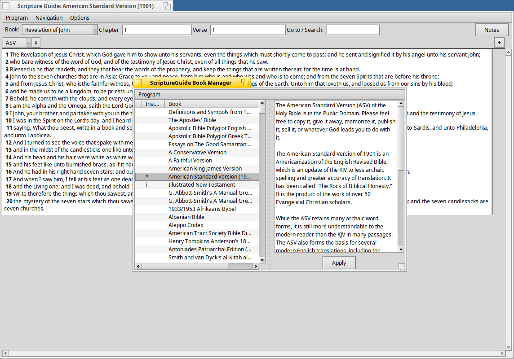

Scripture Guide Manual
The Toolbar
Personal Notes
The Menu
The Find Window
Using a Non-English System
Installing Bibles and Commentaries
|
|
Scripture Guide ManualThe Toolbar Personal Notes The Menu The Find Window Using a Non-English System Installing Bibles and Commentaries |
The Reading Pane The reading pane shows one or more translations, commentaries, or personal-notes columns side by side, all kept aligned on the same verse -- scroll one, and the rest follow. Each column has its own header with a drop-down to switch it to any installed Bible or commentary, and a small "x" button to remove it. The "+" button at the right of the header row adds another column and lets you choose what goes in it:  Selecting text within a single column works like ordinary text selection. Once a selection spans more than one column, it snaps to whole verses -- translations rarely agree on where a sentence, let alone a word, actually ends, so verses are the unit that lines up across all of them. Drag a selection to another column, to the Desktop to create a text clipping, or to another application entirely; dragging a reference (or a clipping created this way) back into any column jumps every column there. Greek and Hebrew modules automatically switch to a suitable font, if one is installed (see below). From time to time a column may show no text at all for the current chapter. This is normally because that particular book or chapter is not available in the module -- for example, looking at the book of Genesis in a New-Testament-only Bible, or a commentary with no entry for a given chapter. The ToolbarThe Book, Chapter, and Verse fields navigate every column in the reading pane together. The Go to / Search field on the right is a single box for both: type a reference (like John 3:16 or, in German, Joh 3, 16) and pressing Enter jumps straight there and highlights it; type anything else and it opens the Find window with that search already running. Pressing Enter again re-runs whatever is in the box, even if you haven't changed it. The Notes button toggles the personal-notes column (see below) on and off. Personal Notes The notes column gives every verse its own small text field, right next to the translations you're reading, rather than one long document you have to scroll through to find the right spot. Notes are saved automatically and are stored per-book/chapter in your settings directory, under /boot/home/config/settings/scriptureguide/notes. This folder is created the first time you start Scripture Guide. The Menu The Program menu opens and closes windows, launches the Book Manager (see Installing Bibles and Commentaries below), and quits Scripture Guide. Most items across all three menus have a keyboard shortcut, shown to their right -- for example, Alt-N opens a new window from almost anywhere.  The Navigation menu is the keyboard-driven way to get around: Alt with the left or right cursor key changes chapters; Control-Alt with left or right jumps to the previous or next book (say, from Exodus to Leviticus); Alt-F opens the Find window.  Unchecking "Show Verse Numbers" hides the verse numbers, which reads more naturally for a devotional-style Bible or a commentary. "Choose Font..." picks the font used for the reading pane. The Find Window The Search in field lists whichever translations are currently open as columns in the reading pane -- not the full list of everything installed -- so it always defaults to (and only ever offers) what you're actually reading. Search results are shown in the list on the left; the surrounding verses of whichever result is selected appear in the box below it. Double-clicking a result opens a new window at that verse. Search OptionsYou can narrow the search to a range of books (say, Matthew through Acts), match case exactly, and choose between matching any of the words, an exact phrase, or a regular expression. Regular Expression SearchesRegular expressions are a flexible way of describing text patterns -- for example, P[^ ]+ matches any word starting with "P". They're a large enough topic that a full explanation is beyond this manual; if you'd like to learn more, this is a reasonable place to start. The forward slashes often used around a regular expression elsewhere (/like this/) aren't needed here. Using a Non-English SystemScripture Guide's own interface is translated into several languages (German among them) and follows your system's locale automatically. Verse references also follow local convention where it differs from English -- for example, a German system accepts and displays Johannes 3, 16 with a comma, rather than John 3:16 with a colon, in the Go to / Search field, the Find window, and dragged/dropped reference text alike. Installing Bibles and CommentariesThe easiest way to install Bibles, commentaries, and other texts is the Book Manager, launched from Program menu -- Book Manager... (or automatically, if you start Scripture Guide with no texts installed yet). Since it needs to contact crosswire.org over plain, unencrypted HTTP to list and download texts, it shows a warning the first time it needs to do that in a session -- accessing religious content online is risky in some countries, so please only continue if you're confident that's safe for you. A "Don't ask again" option is available if you'd rather not see it every time.  Clicking a name shows information about that text, including its size. Double-clicking schedules it to be installed (or, if it's already installed, removed) -- installed texts are shown in bold, blue type. Once you've chosen what you want, click "Apply" and wait for it to finish. Manual InstallationIf you'd rather not use the Book Manager, installing a module by hand isn't difficult either:
 Scripture Guide needs a Greek font to correctly display modules in Ancient Greek; currently the Aristarcoj font is supported, and gets picked automatically once installed. Download it and move it into /boot/home/config/non-packaged/fonts/ttfonts/. Once it's there, choose Preferences|Fonts and click "Rescan". Restart Scripture Guide afterward and Greek modules will display properly. Please respect the license this font is provided under. |